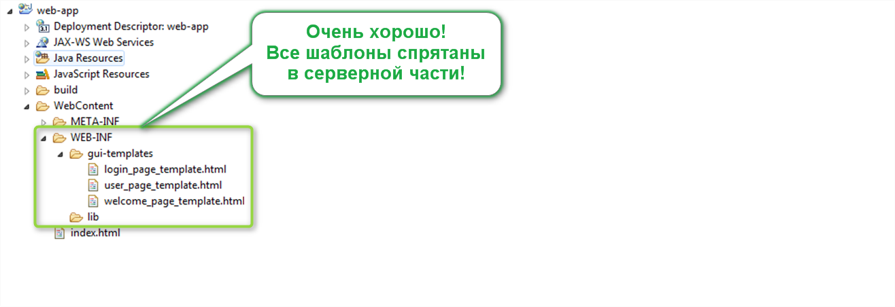

.
А теперь еще раз вспомним, что, если эти кишки будут лежать в клиентской части,
то любой пользователь вашего приложения сможет внимательно рассмотреть их,
просто введя прямой URL в своем браузере.
.
А теперь еще раз вспомним, что, если эти кишки будут лежать в клиентской части,
то любой пользователь вашего приложения сможет внимательно рассмотреть их,
просто введя прямой URL в своем браузере.
Если в вашей программе используются вспомогательные файлы для построения пользовательского интерфейса, то
Категорически запрещается располагать такие файлы в клиентской части приложения!
Такими файлами, например, могут быть:
Почему так?
Тут, прежде всего, необходимо еще раз вспомнить, что все элементы Web-приложения, которые располагаются в клиентской части
Доступны пользователю по прямым URL-ам!
С другой стороны, файлы шаблонов — это не окончательный вариант интерфейса, который должен увидеть пользователь.
Для того чтобы получить этот окончательный вариант
, файлы шаблонов необходимо прогнать через какой-то ваш (или сторонний) API,
который и построит финальный пользовательский интерфейс.
Получается, что файлы шаблонов — это, своего рода, полуфабрикаты!
Ай... Добавим трагизма, и скажем даже, что шаблоны — это кишки вашей программы
.
А теперь еще раз вспомним, что, если эти кишки будут лежать в клиентской части,
то любой пользователь вашего приложения сможет внимательно рассмотреть их,
просто введя прямой URL в своем браузере.
Друзья, внимание! Если вы недавно кушали, или собираетесь кушать в ближайшее время — немедленно прекратите чтение дальнейшего текста!
А теперь немного отвлечемся от программирования, и подумаем, — какие есть народные размышления о вреде поисков истины всегда и во всем?
Мне больше всего вот такое нравится (все, дальше точно — читать только натощак!
):
Тот кто работал на мясокомбинате — никогда сосиски себе домой не купит!
А знаете почему? Конечно — он же видел, как их готовят! Лично я, люблю сосиски...
И fast food — тоже очень люблю...
Но поверьте, технологический процесс приготовления ни сосисок, ни fast food-a — я бы не хотел узнать никогда!
На этом про ужасы в общепите — все. Мы снова возвращаемся в программирование и говорим, что в программировании тоже самое — если бы нам дали возможность посмотреть исходный код наших любимых программ, то мы бы удалили все их немедленно, а винчестер продезинфицировали бы в 98-и процентном растворе святой воды!
Тогда зачем? Зачем вы искушаете ваших пользователей, и даете им возможность подсмотреть в замочную скважину?
Вы думаете то, что они увидят, поразит их? Я уверен, что нет.
Увиденное, скорее, шокирует ваших пользователей. Шок — это, конечно, тоже один из видов поразительности,
но — это поразительность с легким налетом садизма. Не делайте так
Итак, делаем вывод еще раз:
Если в вашей программе используются файлы шаблонов для построения UI, то вы обязаны расположить их в серверной части приложения!
То есть, вот так — не правильно:
А вот так — хорошо:
В общем, быстрее передвигайте ваши шаблоны в серверную часть приложения и смело передвигайтесь дальше по курсу.